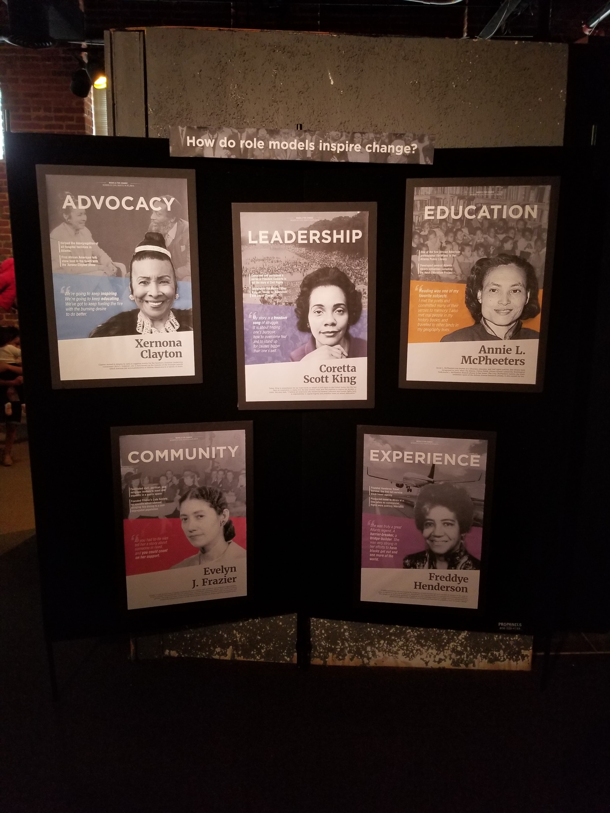
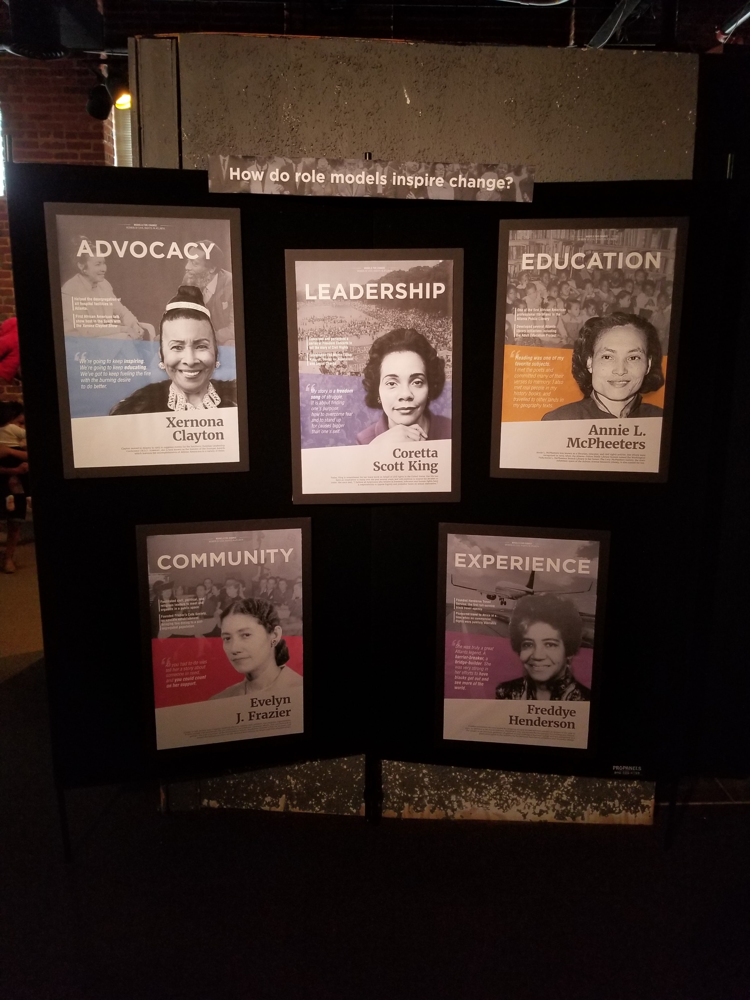

Models For Change
October - December 2017
Overview
Models For Change is part of an exhibition for Apex Museum, celebrating women of the civil rights movement as role models for social change. The exhibit consists of a poster series highlighting the timeless values each activist embodies, a timeline of their major accomplishments in the civil rights movement, and an interactive board for participants to write about role models in their own lives.
Project Details
Group members:
Brendan Cecere, Hao WuMy roles:
Brainstorming, Research, Design Critique, Poster Design, InVision PrototypingProcess
Context
The opportunity to work on this project arose when our course instructor offered the choice to partner with a local museum for our final project. We had previously been focusing on women civil rights activists in the course, so we were given the chance to build on that work and display it at the Apex Museum in Atlanta's historic Sweet Auburn area. The full exhibition, Of Historic Note, would feature each of the 3 student groups' work and be on display throughout April 2018.
 

Concept
The theme and format of the exhibit was open-ended, with the only requirements from our course instructor being a poster series and digital artifact from each group. Our group of three came in having researched several activists from the previous project, so we began by looking at connections among the activists for the exhibit's overall theme.
We explored time, location, career contributions, cultural impact, and personal attributes. We chose personal values as perspectives through which activism can be realized, and later refined this to general qualities of role models. This is how we arrived at the title Models For Change.
Research
After selecting the theme, each member of the group was assigned several activists to further research and head the poster creation for, focusing on tying the content to our selected theme. My activists were the entrepreneur group that I had previously designed posters of - Freddye Henderson, Evelyn Frazier, and Geneva Haugabrooks.
We utilized a collection of historical Southern Bell calendars at the Auburn Avenue Research Library, general online research, and various historical databases for multimedia such as articles, photos, and videos.

Posters - Models for Change
The poster designs originally came from an amalgamation of our previous project's posters, which was then adjusted to fit the exhibit's theme and tweaked through weekly critiques. We started with 8 women, but trimmed it down to 5 by the end. More details can be found in the project's process book. Weekly design critiques were held in class, with each group giving feedback and suggestions on both the posters and digital components.


{kind=link}
{kind=link}
{kind=link}
{kind=link}
{kind=link}
{kind=link}
{kind=link}
{kind=link}
{kind=link}
{kind=link}
{kind=link}
Digital Artifact - Moments of Change
Our digital artifact was originally an interactive map, showing images and events in Atlanta through the decades with a focus on the lives of our chosen activists. This included the history of the women and their values, as well as time, location, and other media such as photo and videos.
Eventually we found that this was too much information in one place and it felt disjointed from the poster series, so we swapped to a digital timeline for a more consistent and streamlined experience. This allowed us to keep the historical event information, as well as the details about the women's lives and multimedia artifacts, which are hosted on individual pages for each person. More details can be found in the project's process book. You can also view the timeline's InVision prototype.


Reflection
This was an incredibly educational and fun project to work on, and I feel grateful for the chance to celebrate the lives and accomplishments of such great historical leaders. The full exhibition, including 2 other student groups from our class, was titled Of Historic Note and opened on April 5th 2018 at Apex Museum. All displays during the actual exhibition were limited to the stand-alone poster series due to space constraints.